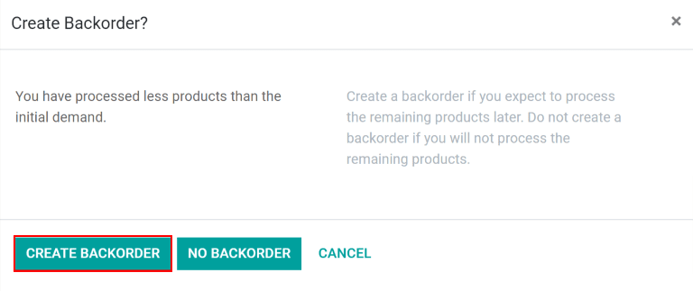

Envío en varios paquetes¶
Puede que en algunos casos sea necesario realizar una entrega con varios artículos en más de un paquete, sobre todo si los artículos son demasiado grandes para enviarse en un solo paquete o si no se pueden empaquetar juntos. El envío de una sola orden en varios paquetes proporciona flexibilidad al empaquetar los artículos, sin necesidad de crear varias órdenes de envío.
Configuración¶
Para dividir una orden en varios paquetes, debe habilitar la configuración Paquetes desde . Active la casilla de verificación junto a Paquetes y haga clic en guardar para confirmar el cambio.

Enviar artículos en varios paquetes¶
Para dividir artículos de la misma orden en varios paquetes, vaya a y seleccione una orden que tenga varios artículos distintos, varios artículos iguales o ambos.
En la pestaña Operaciones, presione el icono ⁞≣ (menú) en la línea del producto que se enviará en el primer paquete.
Se desplegará la ventana emergente de operaciones detalladas. En la tabla que aparece en la parte inferior, la columna Reservado muestra la cantidad total del producto que se incluye en la orden de entrega.
Si enviará todos los artículos en el primer paquete, escriba el número de la columna Hecho en la columna Reservado. Si enviará una cantidad menor, escriba un número menor en la columna Reservado. Haga clic en Confirmar para confirmar las cantidades hechas y cerrar la ventana emergente.

Repita los mismos pasos para cada cantidad de artículo a incluir en el primer paquete. Después, haga clic en Incluir en el paquete para crear un paquete con todos los artículos seleccionados.

Para el siguiente paquete, repita los pasos anteriores. Marque la cantidad de cada artículo a incluir en el paquete como Hecho antes de hacer clic en el botón correspondiente dentro de la orden. Continúe hasta agregar todos los artículos a un paquete.
Por último, cuando termine de enviar todos los paquetes, haga clic en Validar para confirmar que se completó la orden de entrega.
Truco
Después de crear uno o más paquetes, en la esquina superior derecha de la orden de entrega aparece el botón inteligente Paquetes. Al hacer clic en él, se le redirigirá a la página de paquetes de la orden de entrega, donde puede seleccionar cada paquete para ver todos los artículos que incluye.

Crear una orden parcial con los artículos a enviar después¶
No es necesario empaquetar los artículos que enviará después, puede crear una orden parcial y enviarlos cuando corresponda.
Primero envíe los artículos que se deben enviar de inmediato. Si realizará varios envíos, siga estos pasos. Si se enviarán en un solo paquete, en la columna Hecho indique la cantidad de cada artículo a enviar pero no haga clic en el botón Incluir en el paquete.
Después de que la cantidad que se envió inmediatamente se marca como Hecho, haga clic en el botón Validar. Aparecerá la ventana emergente para crear una orden parcial, allí haga clic en el botón correspondiente, confirmará los artículos que se envían de inmediato y crea una nueva orden de entrega para los artículos que se enviarán después.
La orden de entrega parcial aparecerá en el chatter de la orden de entrega original en un mensaje que dice Se creó la orden parcial WH/OUT/XXXXX, haga clic en WH/OUT/XXXXX en el mensaje para ver la orden parcial.

También puede acceder a la orden parcial de entrega desde la aplicación . Haga clic en el botón con el número de órdenes parciales en la tarjeta de Órdenes de entrega y seleccione la que corresponde.

Una vez que los artículos restantes están listos para enviarse, vaya a la orden de entrega parcial. Los artículos se pueden enviar en un solo paquete, haga clic en Validar y seleccione Aplicar en la ventana emergente ¿Traslado inmediato? o puede enviarlos en varios paquetes tal como se describe en los pasos anteriores.
También puede enviar algunos de los artículos y crear una orden parcial para los otros, solo debe seguir los mismos pasos que utilizó para crear la primer orden parcial.